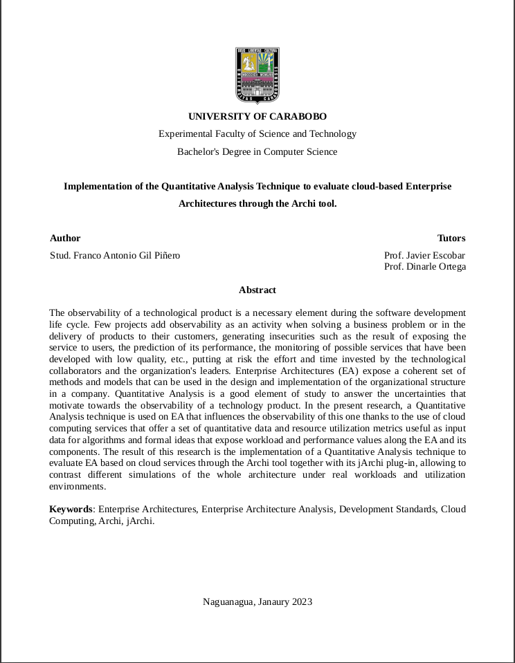

|
|||
 |
|||
Abstract
Enterprise Architectures (EA) expose a coherent set of methods and models that can be used in the design and realization
of the structure and components of an organization, establishing a relationship between its processes, software systems
and technologies used in its implementation. In terms of Enterprise Architecture frameworks, ArchiMate stands out, whose
layered structure is based on services, with different knowledge domains and applicable relationships between them, using
a standard notation and an open source tool such as Archi. Such AE can be efficiently evaluated with the quantitative
analysis method, which allows calculating performance measures through architectural models based on services and thus
responding to the uncertainties motivated by the observability of a technology product, based on pre-established rules.
This research extends this analysis by adding quantitative values referring to computational workloads of applications
in productive environments using cloud technology service providers. The result of this research is the implementation
of a Quantitative Analysis method to evaluate AE based on cloud services using the Archi tool, allowing to contrast
different simulations of AE, in real workload and utilization environments. In this TEG the action research methodology
is used as a research methodology and XP as a software development methodology.
Bsc. Thesis
|  |
Implementation of the Quantitative Analysis Technique to evaluate cloud-based Enterprise Architectures
through the Archi tool
|
Code

|
[code] |
|
|
| 2023 |